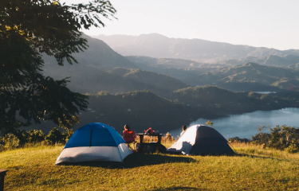

私人島嶼的露營奇遇記
嗨！我是秘境尋蹤小編 Elly，很高興能與你分享我這段令人心曠神怡的旅程。這不僅僅是一次旅行，更是一場對自然、對內心的深度體悟，一次重新與大自然連結的奇妙旅程。希望透過我的分享，你也能感受到這份自然之美，並找到一份屬於自己的心靈寧靜。
這段旅程的開始，是從一個遙遠的小島。我對於這片土地的認識，僅止於一些遊記和照片，對於它的神秘感與未知感讓我充滿了好奇。一艘小船，帶著我穿越海浪，穿過風暴，終於抵達了這片被大自然雕琢的寶地。當我踏上這片島嶼的那一刻，心中充滿了震撼與喜悅。

本篇為會員專屬文章，馬上訂閱瀏覽所有內容！
延伸閱讀
-

週末說走就走露營記
遠離塵囂,用全新的眼光重塑生活的舒適本味。徜徉在環山綠野間,在這處隱世私家別墅裡,盡情領略池畔優閒時光,任林間微風撫面,聆聽花鳥嘶啞之音,重拾內心深處的寧靜...
-

-

和寵物去露營 - 大自然之旅的雙倍體驗
說實話,一開始我有點擔心帶著我的狗狗露營會不會太麻煩。畢竟要照顧牠的飲食起居,還得注意牠的安全。不過這次經驗讓我徹底改觀了!出發前,我特意為狗狗準備了適當...